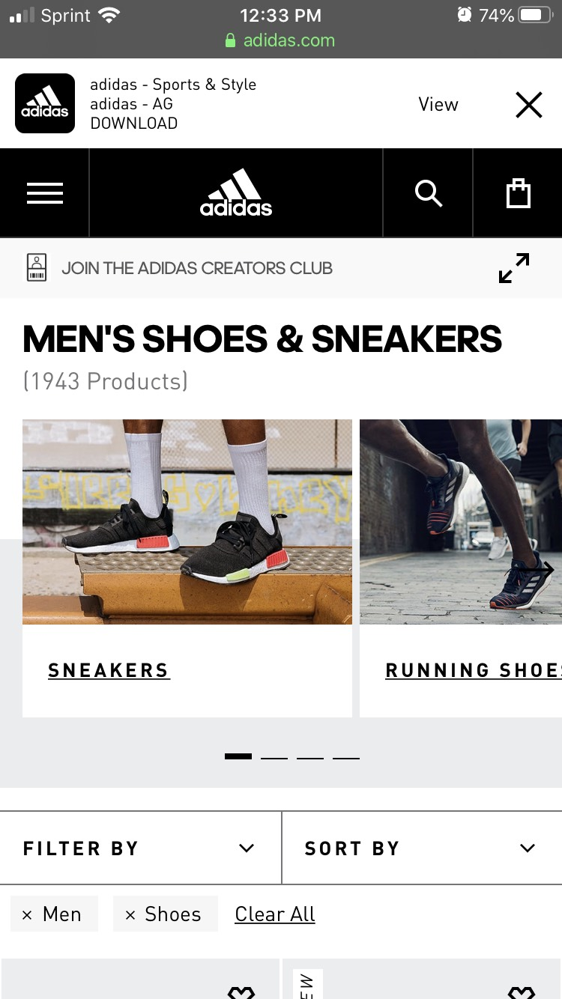

Alignment
Youtube.com
I thought this would be a good example of "Alignment" because you can see how the logos of the chanels are located in the same colunm, also the name of the video and the descriptionn text is located in the same section and the image of the video follows the same pattern.
White Space
Apple.com
I thought this would be a good example of "White Space" because you can see how even though there is not much everything looks fluid and in the right spot, the image does not looks saturated.
Contrast
Adidas.com
You can appreciate multiple types of "Contrast" in this page, from the white logo and the black background to the Larger font "Men's Shoes" and the text "Sneakers" there is a pronounced difference in multiple areas of the page.